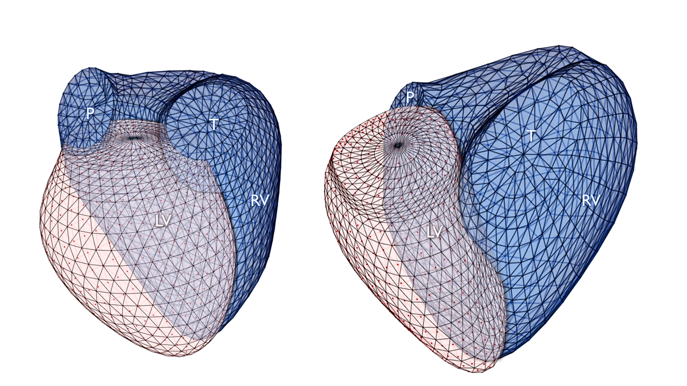

DATASET

Echocardiographic videos
The RVENet dataset contains 3,583 2D apical four-chamber view echocardiographic videos from 944 examinations of 831 individuals in DICOM format. Each subject underwent one or more 3D transthoracic echocardiographic examinations between November 2013 and March 2021 at the Heart and Vascular Center of Semmelweis University. The dataset comprises ten distinct subgroups of subjects: (i) healthy adult volunteers (n=192), (ii) healthy pediatric volunteers (n=54), (iii) elite athletes (n=139), (iv) patients with heart failure and reduced left ventricular EF (LVEF, n=98), (v) patients with LV non-compaction cardiomyopathy (n=27), (vi) patients with aortic valve disease (n=85), (vii) patients with mitral valve disease (n=70), (viii) patients who underwent orthotopic heart transplantation (n=87), (ix) pediatric patients who underwent kidney transplantation (n=23), and (x) others (n=56). Except for removing DICOM tags containing protected health information, no preprocessing was performed on the videos. Files were named according to the following naming convention: [patient hash]_[# of the echocardiographic examination of the given patient]_[# of the video in the given examination].dcm.

Labels
A comprehensive list and description of the labels are provided in Table 1. RV end-diastolic and end-systolic volumes, as well as RVEF, were computed from 3D echocardiographic recordings using a commercially available software solution (4D RV Function 2, TomTec Imaging, Unterschleissheim, Germany). These parameters were calculated only once for each echocardiographic examination. However, an examination may contain multiple 2D apical four-chamber view videos; thus, the same label was linked to all 2D videos within that given examination. Of note, the 3D recordings are not published as part of the dataset. All of the 2D echocardiographic videos were reviewed by a single experienced echocardiographer who (i) assessed the image quality using a 5-point Likert scale (1 – non-diagnostic, 2 – poor, 3 – moderate, 4 – good, 5 – excellent), (ii) labeled videos as either standard or RV-focused, and (iii) determined LV/RV orientation (Mayo – RV on the right side and LV on the left side; Stanford – LV on the right side and RV on the left side). These annotations are also provided in a tabular format, along with the primary diagnosis, age, biological sex, and the train-validation splitting (80:20 ratio) that we used for the training and the evaluation of the models in our experiments. In addition, the ultrasound system utilized for video acquisition, the frame rate, and the total number of frames are also reported for each video.
Labels table
We publish a large-scale echocardiographic dataset for the assessment of RV function. According to our knowledge, this is the first dedicated dataset aiming RV evaluation. Its uniqueness lies in the calculation of the ground truth RVEF which was done using 3D recordings.